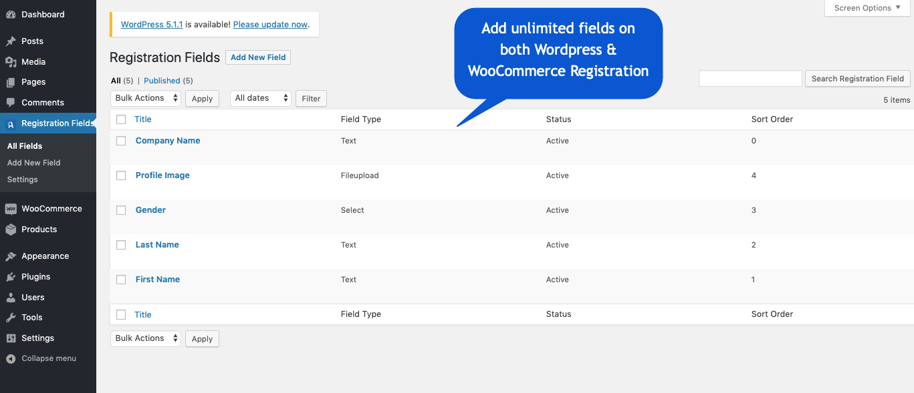
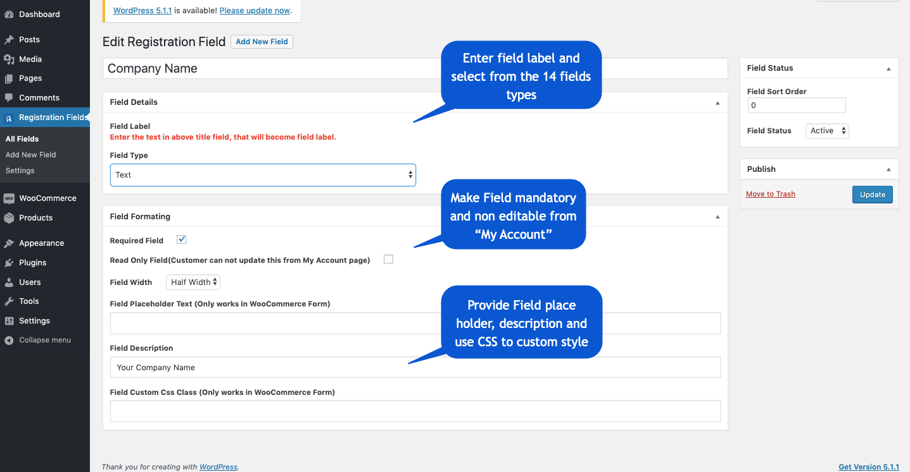
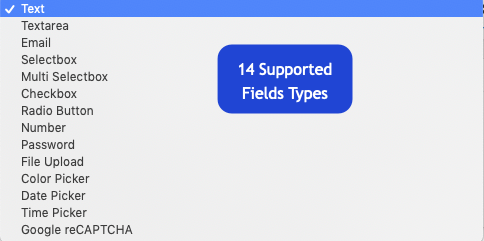
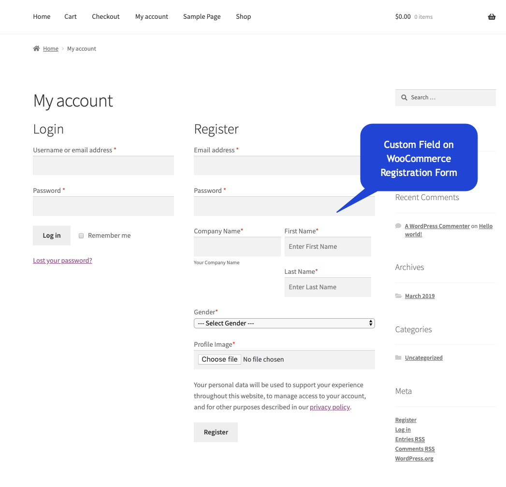
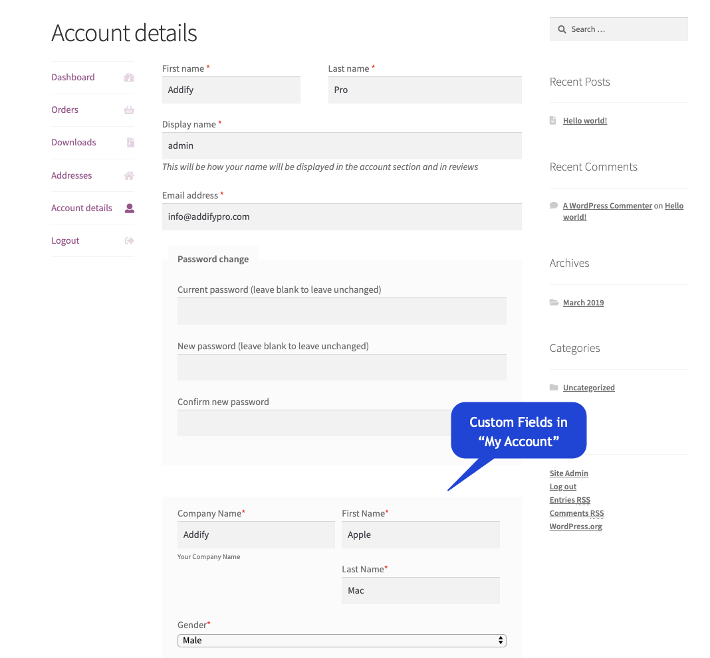
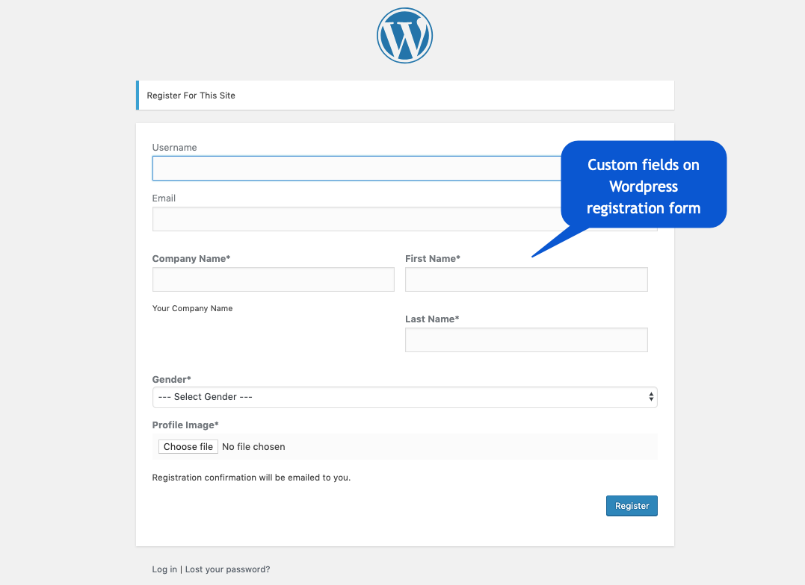
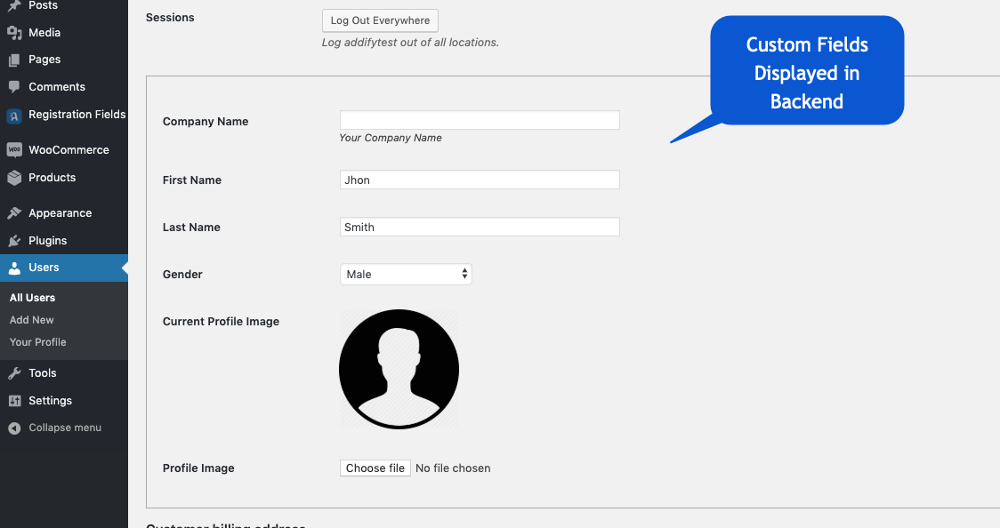

This is a quick guide on installation, and updating.
1: Install From WordPress Admin:
2: Install via FTP:
After activation of plugin you can seeRegistration Addon in WordPress menu. In menu you have 3 menu items.
1 - All Fields
2 - Add New Field
3 - Settings.
Here you can see all fields that are created.

Here you can add fields you want, our moudle support 14 types of fields.

Our module supports 14 types of fields.

Fields are shown on the front end like this, for example WooComerce Form. Fields are also shown on the Checkout page Registration section, if you allowed "Ceate My Account during checkout" in WooCommerce setting then a "Create an account" checkbox is appears on the checkout page, after you check this then these fields are shown here,
Image field will not shown on the Checkout page because WooCommerce not allowed this

User can update fields on his/her my account page, expect those fields those you make "Read Only" when
create fields.

Our module can also show fields on WordPress registration form if in admin "Any one can register" option is checked.

Fields and the data are shown in admin in User edit page.

Extra registration field data is also sent in the admin email notification.
In settings page you can manage some settings, like Profile section title name and api settings for google reCaptcha.